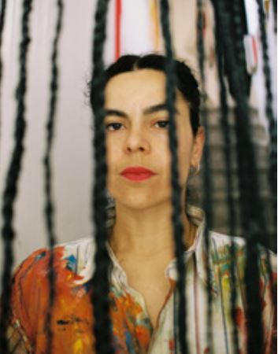
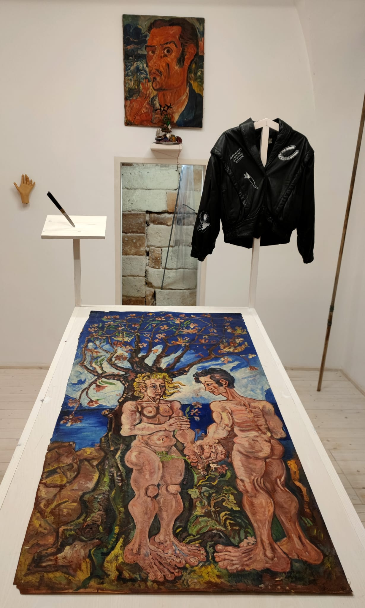

Locandina / Poster
Anteprima della locandina ufficiale dell’evento.
Preview of the official event poster.
Un omaggio alla grazia, alla materia e alla memoria femminile del Sud, tra radici, identità e racconto contemporaneo.
A tribute to grace, material presence, and the feminine memory of Southern Italy, between roots, identity and contemporary storytelling.

Area predisposta per modificare liberamente il testo ufficiale dell’evento. Puoi sostituire i paragrafi italiani e inglesi senza toccare la struttura grafica.
“Calabriselle” nasce come racconto visivo dedicato alla delicatezza, alla forza e alla memoria di un immaginario femminile legato al Sud. L’evento raccoglie tracce, colori, forme e presenze che evocano radici, identità e appartenenza.
Le immagini diventano frammenti di una narrazione intima e collettiva: un dialogo tra tradizione e contemporaneità, tra materia, gesto e luce.
“Calabriselle” unfolds as a visual narrative dedicated to the delicacy, strength and memory of a feminine imagination connected to Southern Italy. The event gathers traces, colours, forms and presences that evoke roots, identity and belonging.
The images become fragments of an intimate and collective narration: a dialogue between tradition and contemporaneity, between matter, gesture and light.

Anteprima della locandina ufficiale dell’evento.
Preview of the official event poster.

Documento stampa con testo introduttivo e informazioni sull’evento.
Press document with introductory text and event information.
Carosello predisposto per 13 immagini. Le immagini sono in modalità “contain”: si vedono intere, senza tagli.


Due riquadri video predisposti per file MP4 locali.
Carica i video nella cartella videos con i nomi indicati sotto.
Two video areas prepared for local MP4 files. Upload the videos to the videos folder with the filenames shown below.
Primo video dell’evento “Calabriselle”.
First video from the “Calabriselle” event.
Secondo video dell’evento “Calabriselle”.
Second video from the “Calabriselle” event.